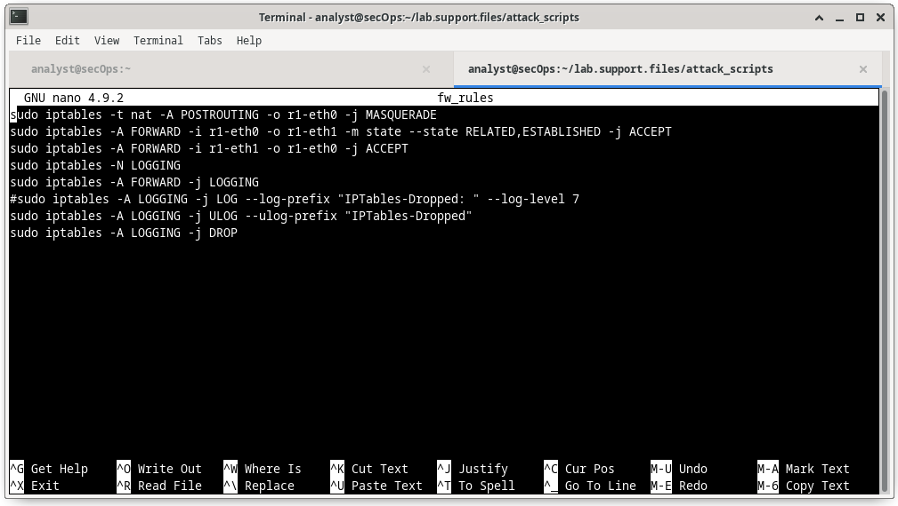
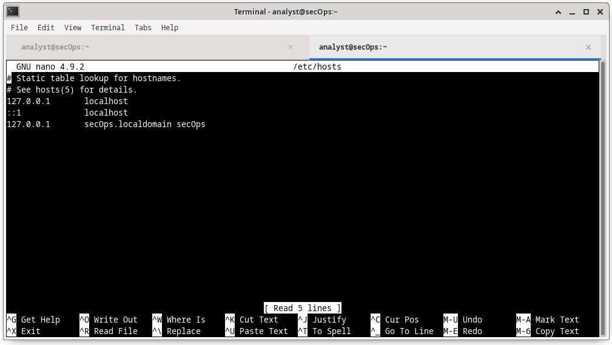

4.2.1 El Shell de Linux
En Linux, el usuario se comunica con el sistema operativo mediante la CLI o GUI. Linux a menudo se inicia en la GUI de forma predeterminada. Esto oculta la CLI del usuario. Una manera de tener acceso a la CLI desde la GUI es mediante una aplicación de emulación de terminales. Estas aplicaciones permiten que el usuario tenga acceso a la CLI y, generalmente, se denominan con alguna variación de la palabra “terminal”. En Linux, los emuladores de terminal comunes son Terminator, eterm, xterm, konsole y gnome-terminal.
Fabrice Bellard ha creado JSLinux que permite ejecutar una versión emulada de Linux en un navegador. Busque información en Internet. Abra una consola Linux en JSLinux y escriba el ls comando para enumerar el contenido del directorio actual. Mantenga la ficha abierta si desea probar algunos de los demás comandos que veremos en este capítulo.
En la figura, se ve gnome-terminal, un emulador de terminal popular de Linux.
Nota: Los termino Shell, consola, ventana de consola, terminal CLI y ventana terminal se suelen usar indistintamente

4.2.2 Comandos Básicos
Los comandos de Linux son programas creados para realizar una tarea específica. Usar el comando man (manual corto) para obtener documentación sobre los comandos. Por ejemplo, man ls proporciona documentación sobre el comando ls del manual del usuario.
Dado que los comandos son programas almacenados en el disco, cuando un usuario escribe un comando, el shell debe encontrarlo en el disco antes de poder ejecutarlo. El shell busca comandos escritos por el usuario en directorios específicos e intenta ejecutarlos. La lista de directorios en la que busca el shell se denomina ruta. La ruta contiene muchos directorios utilizados comúnmente para almacenar los comandos. Si un comando no está en la ruta, el usuario debe especificar su ubicación, o el shell no podrá encontrarlo. Los usuarios pueden agregar fácilmente directorios a la ruta si es necesario.
Para invocar un comando en el shell, simplemente escriba su nombre. El shell intentará encontrarlo en la ruta del sistema y lo ejecutará.
La tabla enlista comandos básicos de Linux y sus funciones.
| Comando | Descripción |
|---|---|
| mv | Mueve o cambia el nombre de archivos y directorios |
| chmod | Modifica los permisos de archivos |
| chown | Cambia la propiedad de un archivo |
| dd | Copia datos de una entrada a un resultado |
| pwd | Muestra el nombre del directorio actual |
| ps | Enlista los procesos del sistema que están actualmente en ejecución |
| su | Simula un inicio de sesión como otro usuario o para convertirse en usuario avanzado |
| sudo | Ejecuta un comando como superusuario, de forma predeterminada, u otro usuario con nombre |
| grep | Se utiliza para buscar cadenas de caracteres específicas dentro de un archivo o de las salidas de otros comandos. Para buscar en el resultado de un comando anterior,grep se debe anexar al final del comando anterior. |
| ifconfig | Se utiliza para mostrar o configurar la información relacionada con la tarjeta de red. Si se emite sin parámetros, ifconfig mostrará la configuración actual de las tarjetas de red. Nota: Aunque todavía está ampliamente en uso, este comando está en desuso. Utilice la ip address en su lugar. |
| apt-get | Se utiliza para instalar, configurar y eliminar paquetes en Debian y sus derivados. Nota: apt-get es una línea de comando front-end fácil de usar para dpkg, Debian administrador de paquetes. La combinación de dpkg y apt-get es el sistema predeterminado del administrador de paquetes en todos los derivados de Debian Linux, incluido Raspbian. |
| iwconfig | Se utiliza para mostrar o configurar la información relacionada con la tarjeta de red inalámbrica. Al igual que ifconfig, iwconfig mostrará información de la conexión inalámbrica cuando se emita sin parámetros. |
| shutdown | Apaga el sistema, shutdown puede recibir la orden de realizar diversas tareas relacionadas con el apagar, incluido reiniciar, detener, suspender o expulsar de todos los usuarios conectados actualmente. |
| passwd | Se utiliza para cambiar la contraseña. Si no se proporcionan parámetros, passwd cambia la contraseña del usuario actual. |
| cat | Se utiliza para enumerar el contenido de un archivo y espera el nombre de archivo como parámetro. El comando cat suele utilizarse en los archivos de texto. |
| man | Se utiliza para mostrar la documentación para un comando específico. |
Nota: Se da por asumido que el usuario tiene los permisos adecuados para ejecutar el comando. Los permisos de archivos en Linux se analizan más adelante en este capítulo.
4.2.3 Comandos de Archivo y de Directorio
Muchas herramientas de línea de comando están incluidas en Linux de manera predeterminada. Para ajustar el funcionamiento del comando, los usuarios pueden añadir los parámetros y los modificadores al comando. La tabla enlista algunos de los comandos más comunes relacionados con archivos y directorios.
| Comando | Descripción |
|---|---|
| ls | Muestra los archivos que se encuentran dentro de un directorio |
| cd | Cambia el directorio actual |
| mkdir | Crea un directorio en el directorio actual |
| cp | Copia archivos de origen a destino |
| mv | Mueve archivos a otro directorio |
| rm | Elimina archivos |
| grep | Busca decenas de caracteres específicas dentro de un archivo o de las salidad de otros comandos |
| cat | Genera una lista con el contenido de un archivo y espera el nombre de archivo como parámetro |
4.2.4 Trabajando con archivos de texto
Linux tiene muchos editores de texto diferentes, con diversas características y funciones. Algunos editores de texto incluyen interfaces gráficas, mientras que otros son solamente herramientas de líneas de comando. Cada editor de texto incluye un conjunto de características diseñado para admitir una tarea específica. Algunos editores de texto se centran en la programación e incluyen funciones, como resaltar la sintaxis, verificación de corchetes y paréntesis y otras características orientadas a la programación.
Si bien los editores de texto gráficos son prácticos y fáciles de usar, los basados en la línea de comando son muy importantes para los usuarios de Linux. El principal beneficio de los editores de texto basados en la línea de comando es que permiten editar un archivo de texto desde una computadora remota.
Considere el siguiente escenario: un usuario tiene que realizar tareas administrativas en una computadora con Linux pero no está frente al equipo. Entonces, utiliza SSH para iniciar una shell remota a la computadora remota. En la shell remota basada en texto, es posible que la interfaz gráfica no esté disponible y eso hace que resulte imposible trabajar con una herramienta como el editor de texto gráfico. En este tipo de situación, los programas con base en texto son cruciales.
La figura muestra nano, un popular editor de texto de línea de comando. El administrador está editando las reglas del firewall. Los editores de texto suelen utilizarse para la configuración del sistema y el mantenimiento en Linux.

Debido a la falta de soporte gráfico, nano (o GNU nano) se puede controlar solamente con el teclado. Por ejemplo, CTRL+O guarda el archivo actual; CTRL+W abre el menú de búsqueda. GNU nano utiliza una barra de accesos directos de dos líneas en la parte inferior de la pantalla; allí se incluyen los comandos del contexto actual. Presione CTRL+G para la pantalla de ayuda y una lista completa de comandos.
4.2.5 La importancia de los archivos de texto en Linux
En Linux, todo se trata como un archivo. Esto incluye la memoria, los discos, el monitor y los directorios. Por ejemplo, desde el punto de vista del sistema operativo, mostrar información en pantalla significa escribir en el archivo que representa el dispositivo de pantalla. No debería sorprendernos que la propia computadora esté configurada mediante archivos. Estos archivos, conocidos como archivos de configuración, suelen ser archivos de texto utilizados para almacenar ajustes y configuraciones de aplicaciones o servicios específicos. En Linux, prácticamente todo depende de archivos de configuración para funcionar. Algunos servicios no tienen solo uno, sino varios archivos de configuración.
Los usuarios con los niveles de permisos correctos pueden usar editores de texto para cambiar el contenido de los archivos de configuración. Después de realizados los cambios, se guarda el archivo que ya puede ser utilizado por el servicio o la aplicación relacionada. Los usuarios pueden especificar exactamente cómo quieren que se comporte cualquier aplicación o servicio determinado. Cuando se abren, los servicios y las aplicaciones comprueban el contenido de archivos de configuración específicos para ajustar su comportamiento en consecuencia.
En la figura, el administrador abre el archivo de configuración host en nano para editar. El archivo host contiene asignaciones estáticas de direcciones IP de host a nombres. Los nombres sirven como accesos directos que permiten conectarse a otros dispositivos mediante un nombre en lugar de una dirección IP. Solamente el superusuario puede cambiar el archivo host.
Nota: El administrador usó el comando sudo nano /etc/hosts para abrir el archivo. El comando sudo (abreviatura de "superuser do") invoca el privilegio de superusuario para usar el editor de texto nano con el fin de abrir el archivo host.

4.2.6 Práctica de laboratorio - Trabajar con archivos de texto en la CLI
En esta práctica de laboratorio, se familiarizará con editores de texto y archivos de configuración de la línea de comando de Linux.
4.2.7 Práctica de laboratorio - Familiarizarse con el Shell de Linux
En esta práctica de laboratorio, utilizará la línea de comandos de Linux para administrar archivos y carpetas y para realizar algunas tareas administrativas básicas.